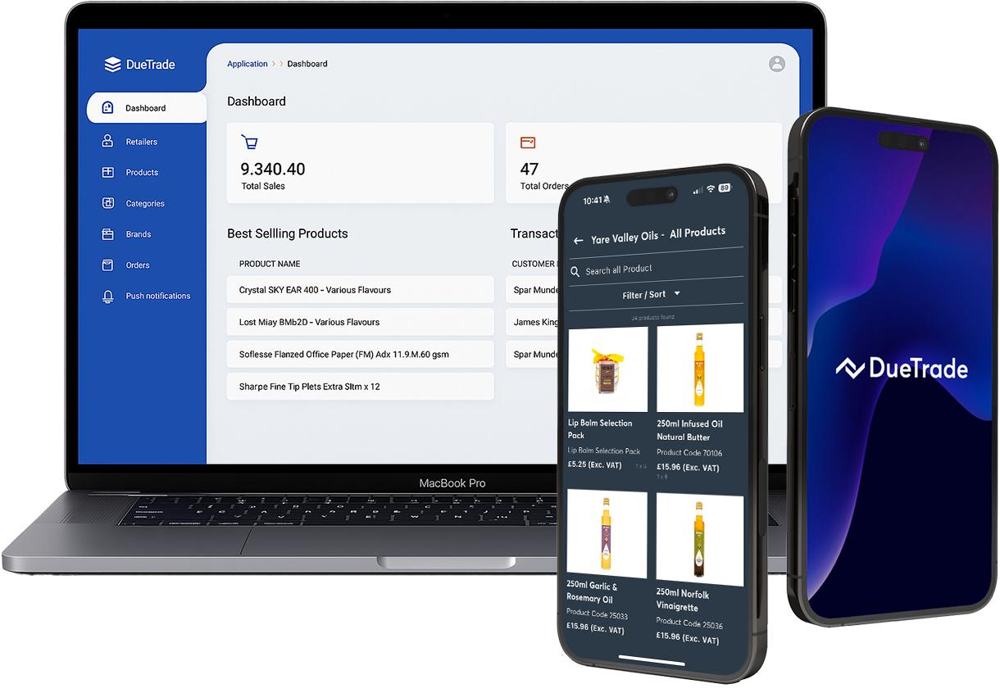
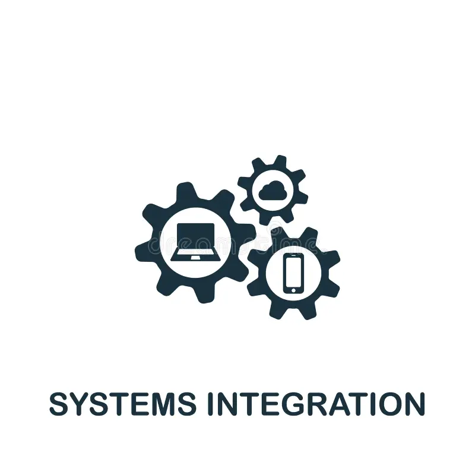

inTradus
Platforma sprzedażowa B2B zintegrowana z systemami ERP. Umożliwia udostępnienie klientom oferty i obsługę zamówień online.
Dowiedz się więcej →Łączymy doświadczenie, nowoczesne oprogramowanie i rozwiązania informatyczne, które wspierają codzienną pracę przedsiębiorstw.
Działalność od 2005 roku.
Własne produkty i rozwiązania.
Łączenie systemów informatycznych.
Konsultacje, wdrożenia i pomoc.

Subiekt nexo PRO to rozbudowany system wspomagający obsługę sprzedaży i gospodarki magazynowej w małych oraz średnich firmach.
Umożliwia obsługę dokumentów handlowych i magazynowych, zarządzanie asortymentem, kontrahentami, zamówieniami oraz rozrachunkami.
Dzięki dodatkowym rozwiązaniom można rozszerzać jego funkcjonalność i dostosowywać system do indywidualnych potrzeb przedsiębiorstwa.
POZNAJ SUBIEKTA NEXO PRORozwiązania wspierające sprzedaż, logistykę, obsługę klientów i zarządzanie przedsiębiorstwem.

Platforma sprzedażowa B2B zintegrowana z systemami ERP. Umożliwia udostępnienie klientom oferty i obsługę zamówień online.
Dowiedz się więcej →
System zarządzania magazynem, wspierający przyjęcia, wydania, kompletację i kontrolę przepływu towarów.
Dowiedz się więcej →Aplikacja mobilna dla przedstawicieli handlowych. Wspiera zbieranie zamówień oraz obsługę sprzedaży w terenie.
Dowiedz się więcej →
Rozwiązanie do obsługi stanowisk sprzedaży dla sieci handlowych i gastronomicznych.
Dowiedz się więcej →Współczesne przedsiębiorstwa potrzebują sprawnego przepływu informacji pomiędzy wykorzystywanymi systemami.
Odpowiednio dobrane oprogramowanie pozwala uporządkować procesy, ograniczyć powtarzalne czynności i usprawnić obsługę klientów.
ZOBACZ OFERTĘ
Stawiamy na praktyczne rozwiązania, dopasowanie do potrzeb i wsparcie na każdym etapie.
Znajomość systemów i potrzeb przedsiębiorstw.
Dobór rozwiązań do specyfiki działalności firmy.
Sprawniejsza wymiana danych między systemami.
Pomoc techniczna i konsultacje dotyczące oprogramowania.
Skontaktuj się z nami i poznaj rozwiązania, które mogą usprawnić pracę Twojego przedsiębiorstwa.
SKONTAKTUJ SIĘ